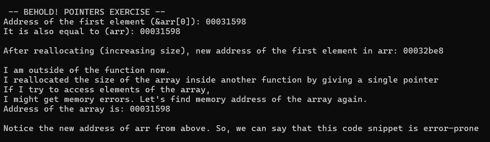
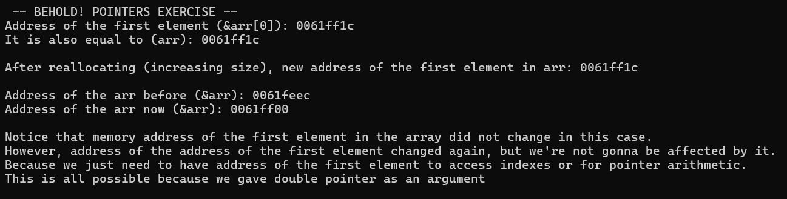
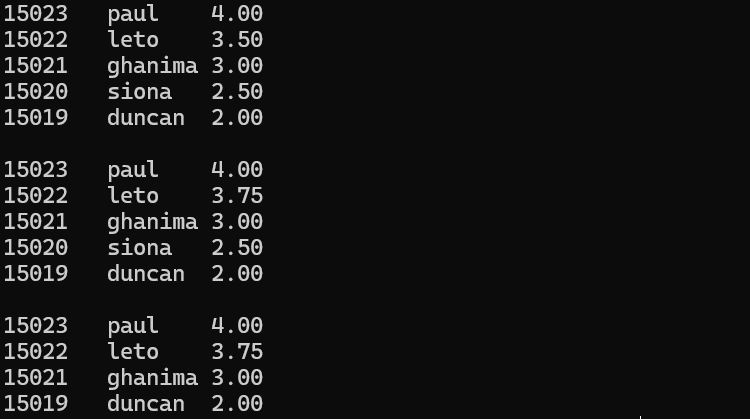

We're given a list of tasks in my C programming class and I think one of them (task 5) could be challenging for most of the newbies. Here's the task 5.
Suppose you are developing a program to manage student records for a university. Each student record contains a student ID, name, and GPA. You decide to implement this program using dynamic memory allocation and pointer manipulation. Your task is to write C functions to perform the following operations:
You should use dynamic memory allocation to manage student records and pointers to manipulate them.
Consider the following function prototypes:
void addStudent(int **ids, char **names, float **gpas, int id, const char* name, float gpa, int *size); void deleteStudent(int **ids, char **names, float **gpas, int id, int *size); void updateGPA(int *ids, float *gpas, int id, float newGPA, int size); void printRecords(int *ids, char **names, float *gpas, int size);
First of all, I thought the given function prototypes should be either one of these below for addStudent and deleteStudent
Because, names is array of char* whereas ids are array of ints. So either way, number of the pointers for names array must be one more than ids.
// This? void addStudent(int *ids, char **names, float **gpas, int id, const char* name, float gpa, int *size); void deleteStudent(int *ids, char **names, float **gpas, int id, int *size); // or this? void addStudent(int **ids, char ***names, float **gpas, int id, const char* name, float gpa, int *size); void deleteStudent(int **ids, char ***names, float **gpas, int id, int *size);
I talked about these prototypes with some of my classmates and they also agreed to me, and they are confused because of me as well.
So, I decided to tinker with this pointer issue and I gave an entire day of mine dealing with this subject.
Let's say we give one pointer for an array in the function call and we will realloc this array based on our requirements.
Here is an example program:
#include <stdio.h> #include <stdlib.h> #define INITIAL_ELEMENTS 2 #define LARGER_SIZE 500 void foo(int *arr); int main() { system("cls"); // I'm on windows printf("\n -- BEHOLD! POINTERS EXERCISE -- \n"); int *arr; arr = (int *)malloc(sizeof(int) * INITIAL_ELEMENTS); foo(arr); printf("\nI am outside of the function now."); printf("\nI reallocated the size of the array inside another function by giving a single pointer\n"); printf("If I try to access elements of the array,"); printf("\nI might get memory errors. Let's find memory address of the array again.\n"); printf("Address of the array is: %p\n", arr); printf("\nNotice the new address of arr from above."); printf("So, we can say that this code snippet is error-prone\n\n"); free(arr); return 0; } void foo(int *arr) { printf("Address of the first element (&arr[0]): %p\n", &arr[0]); printf("It is also equal to (arr): %p\n", arr); arr = realloc(arr, sizeof(int) * LARGER_SIZE); printf("\nAfter reallocating (increasing size), new address of the first element in arr: %p\n", arr); }
Output:

What happens if we give double pointer instead of one?
Here is an example program:
#include <stdio.h> #include <stdlib.h> #define INITIAL_ELEMENTS 2 #define LARGER_SIZE 5000 void foo(int **arr); int main() { system("cls"); // I'm on windows printf("\n -- BEHOLD! POINTERS EXERCISE -- \n"); int *arr; arr = (int *)malloc(sizeof(int) * INITIAL_ELEMENTS); arr[0] = 1; foo(&arr); printf("\nNotice that memory address of the first element in the array did not change in this case.\n"); printf("However, address of the address of the first element changed again, "); printf("but we're not gonna be affected by it.\n"); printf("Because we just need to have address of the first element "); printf("to access indexes or for pointer arithmetic.\n"); printf("This is all possible because we gave double pointer as an argument\n\n"); free(arr); return 0; } void foo(int **arr) { printf("Address of the first element (&arr[0]): %p\n", &(arr[0])); printf("It is also equal to (arr): %p\n", arr); int ***ptr = &arr; *arr = realloc(*arr, sizeof(int) * LARGER_SIZE); printf("\nAfter reallocating (increasing size), new address of the first element in arr: %p\n", arr); printf("\nAddress of the arr before (&arr): %p\n", &ptr); printf("Address of the arr now (&arr): %p\n", &arr); }
Output:

The critical point here is realloc gives a new memory address for our array especially when we increment the size, and if we don't update the previous address of our array, we might get memory errors (bus errors, segmentation faults).
Return value of realloc as defined in here:
On success, returns the pointer to the beginning of newly allocated memory.
To avoid a memory leak, the returned pointer must be deallocated with free or realloc.
The original pointer ptr is invalidated and any access to it is undefined behavior (even if reallocation was in-place).
In order to update the address of the array (which is the address of the first element in the array as well), we need to get a pointer to address of the array and update the address of the array when we realloc using this pointer.
According to all of these observations, below is an implementation of Task 5:
#include <stdio.h> #include <stdlib.h> #include <string.h> #define MAX_NAME_LENGTH 50 void addStudent(int **ids, char ***names, float **gpas, int id, const char* name, float gpa, int *size); void deleteStudent(int **ids, char ***names, float **gpas, int id, int *size); void updateGPA(int *ids, float *gpas, int id, float newGPA, int size); void printRecords(int *ids, char **names, float *gpas, int size); int main(int argc, char* argv[]) { int size = 0; // length of the array // Create arrays int *ids = (int *)malloc(sizeof(int) * size); float *gpas = (float *)malloc(sizeof(float) * size); char** names = (char **)malloc(sizeof(char *) * size); for (int i = 0; i < size; i++) { names[i] = (char *)malloc(sizeof(char) * MAX_NAME_LENGTH); } // -- WRITING TO CONSOLE STARTED -- // Add new students, you guessed it right! They are from 'Dune' series. addStudent(&ids, &names, &gpas, 15023, "paul", 4.0, &size); addStudent(&ids, &names, &gpas, 15022, "leto", 3.5, &size); addStudent(&ids, &names, &gpas, 15021, "ghanima", 3.0, &size); addStudent(&ids, &names, &gpas, 15020, "siona", 2.5, &size); addStudent(&ids, &names, &gpas, 15019, "duncan", 2.0, &size); // Print to the console various functions printRecords(ids, names, gpas, size); printf("\n"); updateGPA(ids, gpas, 15022, 3.75, size); printRecords(ids, names, gpas, size); printf("\n"); deleteStudent(&ids, &names, &gpas, 15020, &size); printRecords(ids, names, gpas, size); // -- WRITING TO CONSOLE ENDED -- // Free the resources free(ids); free(gpas); for (int i = 0; i < size; i++) { free(names[i]); } free(names); return 0; } void addStudent(int **ids, char ***names, float **gpas, int id, const char* name, float gpa, int *size) { int index = *size; (*size)++; // Reallocate memory for the arrays *ids = realloc(*ids, (*size) * sizeof(int)); *names = realloc(*names, (*size) * sizeof(char *)); *gpas = realloc(*gpas, (*size) * sizeof(float)); // Check if any of them returned NULL if (*ids == NULL || names == NULL || *gpas == NULL) { printf("Not enough memory\n"); return; } // Add new student to the arrays (*ids)[index] = id; (*gpas)[index] = gpa; // Allocate new memory for the name (*names)[*size - 1] = malloc((strlen(name) + 1) * sizeof(char)); strcpy((*names)[*size - 1], name); } void deleteStudent(int **ids, char ***names, float **gpas, int id, int *size) { int i, j; for (i = 0; i < *size; i++) { if ((*ids)[i] == id) { // Shift remaining elements to fill the gap for (j = i; j < (*size) - 1; j++) { (*ids)[j] = (*ids)[j + 1]; (*names)[j] = (*names)[j + 1]; (*gpas)[j] = (*gpas)[j + 1]; } // Decrease the size of the array (*size)--; *ids = realloc(*ids, sizeof(int) * (*size)); *names = realloc(*names, sizeof(char*) * (*size)); *gpas = realloc(*gpas, sizeof(float) * (*size)); break; // exit the loop after deletion } } } void updateGPA(int *ids, float *gpas, int id, float newGPA, int size) { for (int i = 0; i < size; i++) { // Find the index of the student if (ids[i] == id) { gpas[i] = newGPA; } } } void printRecords(int *ids, char **names, float *gpas, int size) { for (int i = 0; i < size; i++) { printf("%d\t", ids[i]); printf("%s\t", names[i]); printf("%.2f\t", gpas[i]); printf("\n"); } }
You can see the output:
